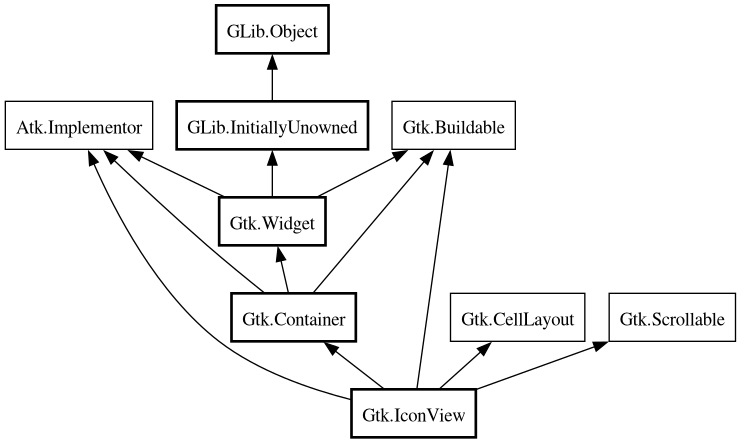

IconView
Object Hierarchy:

Description:
[
CCode ( type_id =
"gtk_icon_view_get_type ()" ) ]
public class IconView :
Container,
Implementor,
Buildable,
CellLayout,
Scrollable
Content:
Properties:
Creation methods:
Methods:
- public void convert_widget_to_bin_window_coords (int wx, int wy, out int bx, out int by)
- public Surface create_drag_icon (TreePath path)
- public void enable_model_drag_dest (TargetEntry[] targets, DragAction actions)
- public void enable_model_drag_source (ModifierType start_button_mask, TargetEntry[] targets, DragAction actions)
- public bool get_activate_on_single_click ()
- public bool get_cell_rect (TreePath path, CellRenderer? cell, out Rectangle rect)
- public int get_column_spacing ()
- public int get_columns ()
- public bool get_cursor (out TreePath path, out unowned CellRenderer cell)
- public bool get_dest_item_at_pos (int drag_x, int drag_y, out TreePath path, out IconViewDropPosition pos)
- public void get_drag_dest_item (out TreePath path, out IconViewDropPosition pos)
- public bool get_item_at_pos (int x, int y, out TreePath path, out unowned CellRenderer cell)
- public int get_item_column (TreePath path)
- public Orientation get_item_orientation ()
- public int get_item_padding ()
- public int get_item_row (TreePath path)
- public int get_item_width ()
- public int get_margin ()
- public int get_markup_column ()
- public unowned TreeModel? get_model ()
- public TreePath? get_path_at_pos (int x, int y)
- public int get_pixbuf_column ()
- public bool get_reorderable ()
- public int get_row_spacing ()
- public List<TreePath> get_selected_items ()
- public SelectionMode get_selection_mode ()
- public int get_spacing ()
- public int get_text_column ()
- public int get_tooltip_column ()
- public bool get_tooltip_context (ref int x, ref int y, bool keyboard_tip, out unowned TreeModel model, out TreePath path, out TreeIter iter)
- public bool get_visible_range (out TreePath start_path, out TreePath end_path)
- public bool path_is_selected (TreePath path)
- public void scroll_to_path (TreePath path, bool use_align, float row_align, float col_align)
- public void select_path (TreePath path)
- public void selected_foreach (IconViewForeachFunc func)
- public void set_activate_on_single_click (bool single)
- public void set_column_spacing (int column_spacing)
- public void set_columns (int columns)
- public void set_cursor (TreePath path, CellRenderer? cell, bool start_editing)
- public void set_drag_dest_item (TreePath? path, IconViewDropPosition pos)
- public void set_item_orientation (Orientation orientation)
- public void set_item_padding (int item_padding)
- public void set_item_width (int item_width)
- public void set_margin (int margin)
- public void set_markup_column (int column)
- public void set_model (TreeModel? model)
- public void set_pixbuf_column (int column)
- public void set_reorderable (bool reorderable)
- public void set_row_spacing (int row_spacing)
- public void set_selection_mode (SelectionMode mode)
- public void set_spacing (int spacing)
- public void set_text_column (int column)
- public void set_tooltip_cell (Tooltip tooltip, TreePath path, CellRenderer? cell)
- public void set_tooltip_column (int column)
- public void set_tooltip_item (Tooltip tooltip, TreePath path)
- public void unselect_path (TreePath path)
- public void unset_model_drag_dest ()
- public void unset_model_drag_source ()
Signals:
Inherited Members:
All known members inherited from class Gtk.Container
All known members inherited from class Gtk.Widget
All known members inherited from class GLib.Object
All known members inherited from interface Atk.Implementor
All known members inherited from interface Gtk.Buildable
All known members inherited from interface Gtk.CellLayout
All known members inherited from interface Gtk.Scrollable